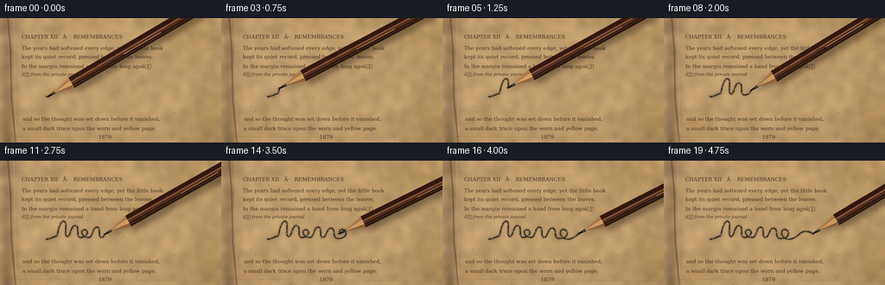
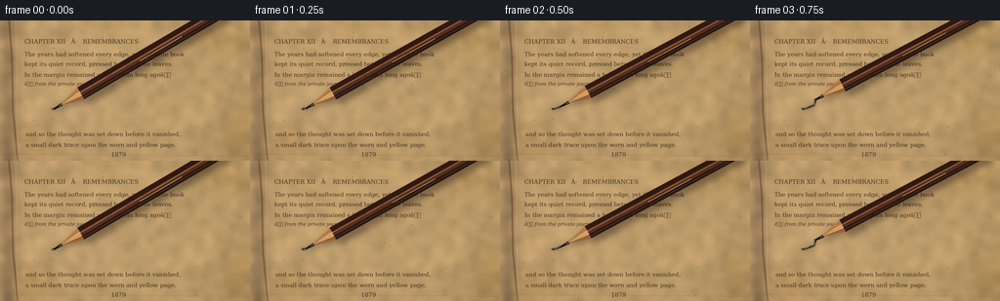
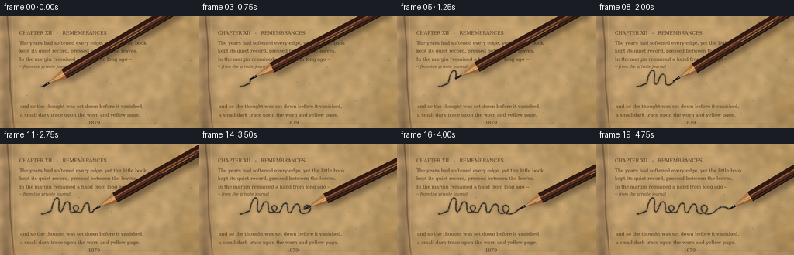
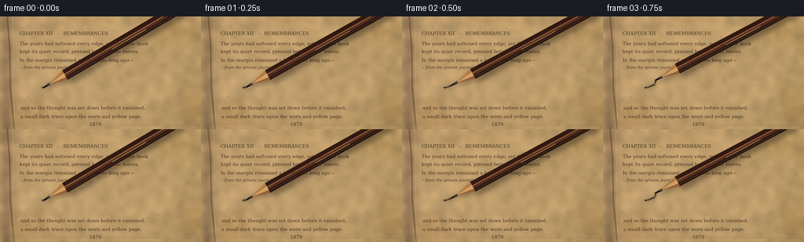

CODING AGENTS AS PIXEL WORLD MODELS
traex/GPT-5.6-Sol · mechanics_0049
点击播放 · 原生 RGB 像素
逐轮保存的候选
回放视频、检查图与代码变化。
每份候选均可单独播放。实际图片检查记录在下方工具轨迹中。
候选 01播放与检查图
点击播放 · 原生 RGB 像素


展开代码变化
--- 上一保存版本
+++ 本次保存版本
@@ -0,0 +1,273 @@
+"""Procedurally generate a macro shot of a brown pencil writing on an old page.
+
+The renderer is deliberately deterministic and uses 4x supersampling for clean
+geometry while retaining a fibrous, rough paper texture at the target size.
+"""
+
+from pathlib import Path
+import math
+
+import cv2
+import numpy as np
+from PIL import Image, ImageDraw, ImageFilter, ImageFont
+
+import artifact_io
+
+
+W, H, N = 256, 144, 20
+SS = 4
+SW, SH = W * SS, H * SS
+RNG = np.random.default_rng(49217)
+
+
+def font(size, italic=False):
+ choices = ([
+ "/usr/share/fonts/truetype/dejavu/DejaVuSerif-Italic.ttf",
+ "/usr/share/fonts/truetype/liberation2/LiberationSerif-Italic.ttf",
+ ] if italic else [
+ "/usr/share/fonts/truetype/dejavu/DejaVuSerif.ttf",
+ "/usr/share/fonts/truetype/liberation2/LiberationSerif-Regular.ttf",
+ ])
+ for path in choices:
+ if Path(path).exists():
+ return ImageFont.truetype(path, size)
+ return ImageFont.load_default()
+
+
+def make_page():
+ """Build a warm, rough, stained book page at rendering resolution."""
+ # Several noise scales suggest pulp, fibers, and unevenly aged sizing.
+ yh, xh = np.mgrid[0:SH, 0:SW]
+ coarse = RNG.normal(0, 1, (SH // 16 + 2, SW // 16 + 2)).astype(np.float32)
+ coarse = cv2.resize(coarse, (SW, SH), interpolation=cv2.INTER_CUBIC)
+ coarse = cv2.GaussianBlur(coarse, (0, 0), 15)
+ medium = RNG.normal(0, 1, (SH, SW)).astype(np.float32)
+ medium = cv2.GaussianBlur(medium, (0, 0), 4.0)
+ fine = RNG.normal(0, 1, (SH, SW)).astype(np.float32)
+ vertical_age = 5.0 * (xh / SW) - 2.0
+ base = np.empty((SH, SW, 3), np.float32)
+ base[..., 0] = 190 + 18 * coarse + 5 * medium + 2.4 * fine + vertical_age
+ base[..., 1] = 157 + 14 * coarse + 4 * medium + 2.0 * fine + vertical_age
+ base[..., 2] = 108 + 10 * coarse + 3 * medium + 1.7 * fine
+
+ # Gutter shadow, peripheral age, and broad translucent foxing.
+ vignette = ((xh - SW * .52) / (SW * .68)) ** 2 + ((yh - SH * .48) / (SH * .85)) ** 2
+ base -= np.clip(vignette[..., None] - .18, 0, 1) * np.array([23, 20, 15])
+ gutter = 33 * np.exp(-((xh - 8 * SS) / (9 * SS)) ** 2)
+ base -= gutter[..., None] * np.array([1.0, .87, .55])
+
+ for cx, cy, rx, ry, strength in [
+ (226, 18, 45, 27, 7), (37, 127, 32, 24, 8), (168, 51, 25, 15, 4),
+ (246, 116, 25, 38, 9), (107, 8, 58, 11, 4),
+ ]:
+ d = ((xh / SS - cx) / rx) ** 2 + ((yh / SS - cy) / ry) ** 2
+ stain = strength * np.exp(-2.0 * d)
+ base[..., 0] -= stain * .35
+ base[..., 1] -= stain * .75
+ base[..., 2] -= stain * 1.25
+
+ page = Image.fromarray(np.uint8(np.clip(base, 0, 255)), "RGB")
+ d = ImageDraw.Draw(page, "RGBA")
+
+ # Subtle long paper fibers and dark embedded flecks.
+ for _ in range(250):
+ x = int(RNG.integers(9 * SS, SW))
+ y = int(RNG.integers(0, SH))
+ length = int(RNG.integers(3, 22) * SS)
+ color = (93, 67, 40, int(RNG.integers(8, 25))) if RNG.random() < .72 else (244, 225, 176, 25)
+ d.line((x, y, min(SW, x + length), y + int(RNG.integers(-2, 3))), fill=color, width=1)
+ for _ in range(170):
+ x, y = int(RNG.integers(8 * SS, SW)), int(RNG.integers(0, SH))
+ r = int(RNG.choice([1, 1, 2, 3]))
+ d.ellipse((x-r, y-r, x+r, y+r), fill=(67, 46, 27, int(RNG.integers(18, 54))))
+
+ # Curved inner binding and page creases make the surface read as an old book.
+ d.line([(9*SS, 0), (12*SS, 38*SS), (13*SS, 93*SS), (18*SS, SH)],
+ fill=(64, 39, 23, 92), width=2*SS)
+ d.line([(16*SS, 0), (18*SS, SH)], fill=(241, 211, 154, 40), width=SS)
+ d.line([(0, 137*SS), (SW, 139*SS)], fill=(70, 46, 28, 24), width=SS)
+
+ # A faded printed page, with a generous blank band where the pencil writes.
+ f = font(6 * SS)
+ fi = font(5 * SS, italic=True)
+ ink = (67, 49, 32, 104)
+ text_rows = [
+ (25, 18, "CHAPTER XII · REMEMBRANCES"),
+ (25, 31, "The years had softened every edge, yet the little book"),
+ (25, 41, "kept its quiet record, pressed between the leaves."),
+ (25, 52, "In the margin remained a hand from long agoâ"),
+ (26, 113, "and so the thought was set down before it vanished,"),
+ (26, 124, "a small dark trace upon the worn and yellow page."),
+ (26, 134, " 1879"),
+ ]
+ for x, y, s in text_rows:
+ d.text((x*SS, y*SS), s, font=f, fill=ink)
+ d.text((25*SS, 62*SS), "â from the private journal", font=fi, fill=(72, 51, 34, 70))
+
+ # A few broken ink losses over type increase the aged impression.
+ for _ in range(45):
+ x = int(RNG.integers(24, 245) * SS)
+ y = int(RNG.choice([31, 41, 52, 113, 124]) * SS + RNG.integers(-2, 3) * SS)
+ d.rectangle((x, y, x+int(RNG.integers(1, 4))*SS, y+SS), fill=(191, 158, 111, 85))
+ return page
+
+
+def cubic(p0, p1, p2, p3, count=18):
+ t = np.linspace(0, 1, count, endpoint=False)[:, None]
+ return ((1-t)**3*p0 + 3*(1-t)**2*t*p1 + 3*(1-t)*t**2*p2 + t**3*p3)
+
+
+def writing_path():
+ """A single flowing handwritten gesture with loops and a final flourish."""
+ segments = [
+ ((53,91),(58,91),(62,88),(66,87)), # entry stroke
+ ((66,87),(68,78),(70,70),(74,70)), # first upstroke
+ ((74,70),(79,71),(73,87),(78,88)), # first downstroke
+ ((78,88),(82,87),(82,75),(87,75)), # second arch
+ ((87,75),(93,76),(87,88),(93,89)),
+ ((93,89),(101,89),(104,81),(98,80)), # small e loop
+ ((98,80),(92,80),(94,89),(103,89)),
+ ((103,89),(108,88),(107,77),(112,77)), # second m
+ ((112,77),(118,77),(112,89),(118,89)),
+ ((118,89),(122,88),(122,78),(127,78)),
+ ((127,78),(133,79),(128,89),(134,90)),
+ ((134,90),(142,91),(147,85),(143,81)), # rounded o-like loop
+ ((143,81),(138,77),(134,83),(138,88)),
+ ((138,88),(145,95),(154,88),(158,84)), # long ending flourish
+ ((158,84),(165,79),(171,84),(176,86)),
+ ]
+ raw = []
+ for seg in segments:
+ pts = [np.array(p, float) for p in seg]
+ raw.append(cubic(*pts))
+ raw.append(np.array([[176., 86.]]))
+ raw = np.vstack(raw)
+ # Resample by arc length so the pencil advances smoothly.
+ dist = np.r_[0, np.cumsum(np.linalg.norm(np.diff(raw, axis=0), axis=1))]
+ target = np.linspace(0, dist[-1], 520)
+ return np.column_stack([np.interp(target, dist, raw[:, i]) for i in range(2)])
+
+
+PAGE = make_page()
+PATH = writing_path()
+
+
+def draw_graphite(image, stop):
+ """Draw the accumulated graphite trail through PATH[stop]."""
+ stop = max(2, min(stop, len(PATH)))
+ layer = Image.new("RGBA", (SW, SH), (0, 0, 0, 0))
+ # A faint rubbed halo along the stroke grounds it in the rough paper.
+ halo = Image.new("RGBA", (SW, SH), (0, 0, 0, 0))
+ hd = ImageDraw.Draw(halo, "RGBA")
+ scaled = [(int(x*SS), int(y*SS)) for x, y in PATH[:stop]]
+ hd.line(scaled, fill=(28, 26, 24, 46), width=3*SS, joint="curve")
+ halo = halo.filter(ImageFilter.GaussianBlur(1.15*SS))
+ image = Image.alpha_composite(image.convert("RGBA"), halo)
+
+ d = ImageDraw.Draw(layer, "RGBA")
+ # Segment-level pressure changes, paper skips, and double-edged grains.
+ for i in range(stop-1):
+ p0, p1 = PATH[i], PATH[i+1]
+ phase = math.sin(i*.39) + .45*math.sin(i*1.73)
+ pressure = .72 + .25 * (phase*.5+.5)
+ width = max(3, int(SS * (1.18 + .72*pressure)))
+ alpha = int(135 + 83*pressure)
+ # deterministic pinholes where graphite rides over raised fibers
+ if i % 23 in (7, 8):
+ alpha = int(alpha * .42)
+ q0 = tuple((p0*SS).astype(int)); q1 = tuple((p1*SS).astype(int))
+ d.line((q0, q1), fill=(34, 31, 29, alpha), width=width)
+ if i % 7 == 0:
+ d.line((q0, q1), fill=(18, 18, 18, 70), width=max(1, width//3))
+ # Loose grains gather near the newest contact point.
+ px, py = PATH[stop-1] * SS
+ local = np.random.default_rng(9000 + stop)
+ for _ in range(13):
+ a = local.random()*math.tau
+ r = local.random()*3.2*SS
+ x, y = px+math.cos(a)*r, py+math.sin(a)*r*.45
+ rr = int(local.choice([1, 1, 2]))
+ d.ellipse((x-rr, y-rr, x+rr, y+rr), fill=(31, 29, 27, int(local.integers(30, 105))))
+ return Image.alpha_composite(image, layer)
+
+
+def poly(points):
+ return [(int(x*SS), int(y*SS)) for x, y in points]
+
+
+def draw_pencil(image, tip, frame_index):
+ """Render a sharpened hexagonal pencil, including its cast shadow."""
+ # The held shaft rocks slightly as it travels, like natural handwriting.
+ angle = math.radians(-29.5 + 2.3*math.sin(frame_index*.54) - 1.0*math.cos(frame_index*.23))
+ u = np.array([math.cos(angle), math.sin(angle)])
+ n = np.array([-u[1], u[0]])
+ tip = np.asarray(tip, float)
+ base = tip + 31*u
+ far = tip + 218*u
+
+ # Soft shadow is offset most beneath the raised shaft, but tight at contact.
+ sh = Image.new("RGBA", (SW, SH), (0, 0, 0, 0))
+ sd = ImageDraw.Draw(sh, "RGBA")
+ off = np.array([4.0, 5.2])
+ sd.polygon(poly([base-7*n+off, far-7*n+off, far+7*n+off, base+7*n+off]), fill=(25,15,10,95))
+ sd.polygon(poly([tip+np.array([1,2]), base-7*n+off*.45, base+7*n+off*.45]), fill=(25,15,10,70))
+ sh = sh.filter(ImageFilter.GaussianBlur(3.1*SS))
+ image = Image.alpha_composite(image, sh)
+
+ obj = Image.new("RGBA", (SW, SH), (0, 0, 0, 0))
+ d = ImageDraw.Draw(obj, "RGBA")
+ # Three visible facets of a deep umber, hexagonal lacquered body.
+ facet_bounds = [(-7,-2.3,(50,25,17,255)), (-2.3,2.5,(86,46,30,255)), (2.5,7,(43,22,16,255))]
+ for a, b, color in facet_bounds:
+ d.polygon(poly([base+a*n, far+a*n, far+b*n, base+b*n]), fill=color)
+ # Fine lacquer highlight and an understated gold maker's rule.
+ d.line(poly([base-1.2*n, far-1.2*n]), fill=(151,92,61,125), width=max(1, SS))
+ d.line(poly([base+4.5*n, far+4.5*n]), fill=(22,12,10,150), width=max(1, SS))
+ mark_a, mark_b = base+69*u+2*n, base+119*u+2*n
+ d.line(poly([mark_a, mark_b]), fill=(194,145,77,125), width=max(1, SS))
+
+ # Sharpened cedar cone, divided into planes; paint edge is slightly irregular.
+ apex = tip + 5.5*u
+ d.polygon(poly([apex, base-7*n, base-2*n]), fill=(184,126,73,255))
+ d.polygon(poly([apex, base-2*n, base+2.6*n]), fill=(222,168,101,255))
+ d.polygon(poly([apex, base+2.6*n, base+7*n]), fill=(151,98,59,255))
+ # Cedar grain converges toward the graphite core.
+ for offs, color in [(-4.4,(103,66,40,120)), (0.4,(120,74,43,100)), (4.5,(89,54,35,115))]:
+ d.line(poly([base+offs*n, tip+8*u+offs*.12*n]), fill=color, width=max(1, SS//2))
+ # Dark graphite core is visibly continuous with the deposited line.
+ d.polygon(poly([tip-.8*n, tip+8.8*u-1.5*n, tip+8.8*u+1.5*n, tip+.8*n]), fill=(28,27,26,255))
+ d.ellipse((int((tip[0]-.95)*SS), int((tip[1]-.75)*SS),
+ int((tip[0]+.95)*SS), int((tip[1]+.75)*SS)), fill=(20,19,18,255))
+ # A warm razor-thin edge catches the overhead light.
+ d.line(poly([apex, base-2*n]), fill=(245,198,128,110), width=max(1, SS//2))
+ return Image.alpha_composite(image, obj)
+
+
+def render_frame(i):
+ # Slight ease-in/out gives the action intentional contact without stopping.
+ t = i / (N-1)
+ eased = t*t*(3-2*t)
+ progress = .012 + .975*eased
+ stop = int(progress * (len(PATH)-1)) + 1
+ canvas = PAGE.convert("RGBA")
+ canvas = draw_graphite(canvas, stop)
+ canvas = draw_pencil(canvas, PATH[stop-1], i)
+
+ # Warm directional illumination and a restrained lens vignette.
+ arr = np.asarray(canvas.convert("RGB"), dtype=np.float32)
+ yy, xx = np.mgrid[0:SH, 0:SW]
+ light = 1.025 - .075*(xx/SW) + .025*(1-yy/SH)
+ arr *= light[...,None]
+ arr = np.clip(arr, 0, 255).astype(np.uint8)
+ im = Image.fromarray(arr).resize((W,H), Image.Resampling.LANCZOS)
+ return np.asarray(im, dtype=np.uint8)
+
+
+def main():
+ frames = np.stack([render_frame(i) for i in range(N)])
+ assert frames.shape == (20, 144, 256, 3) and frames.dtype == np.uint8
+ artifact_io.save(frames, Path(__file__).resolve().parent)
+
+
+if __name__ == "__main__":
+ main()
候选 02播放与检查图
点击播放 · 原生 RGB 像素


展开代码变化
--- 上一保存版本
+++ 本次保存版本
@@ -66,7 +66,7 @@
base[..., 1] -= stain * .75
base[..., 2] -= stain * 1.25
- page = Image.fromarray(np.uint8(np.clip(base, 0, 255)), "RGB")
+ page = Image.fromarray(np.uint8(np.clip(base, 0, 255)))
d = ImageDraw.Draw(page, "RGBA")
# Subtle long paper fibers and dark embedded flecks.
@@ -92,17 +92,17 @@
fi = font(5 * SS, italic=True)
ink = (67, 49, 32, 104)
text_rows = [
- (25, 18, "CHAPTER XII · REMEMBRANCES"),
+ (25, 18, "CHAPTER XII - REMEMBRANCES"),
(25, 31, "The years had softened every edge, yet the little book"),
(25, 41, "kept its quiet record, pressed between the leaves."),
- (25, 52, "In the margin remained a hand from long agoâ"),
+ (25, 52, "In the margin remained a hand from long ago --"),
(26, 113, "and so the thought was set down before it vanished,"),
(26, 124, "a small dark trace upon the worn and yellow page."),
(26, 134, " 1879"),
]
for x, y, s in text_rows:
d.text((x*SS, y*SS), s, font=f, fill=ink)
- d.text((25*SS, 62*SS), "â from the private journal", font=fi, fill=(72, 51, 34, 70))
+ d.text((25*SS, 62*SS), "-- from the private journal", font=fi, fill=(72, 51, 34, 70))
# A few broken ink losses over type increase the aged impression.
for _ in range(45):
可观测工具轨迹
实际执行的命令与返回图片。
命令 1exit 0
/bin/bash -lc "cat prompt.txt && printf '\\n--- GENERATION_RULES.md ---\\n' && cat GENERATION_RULES.md"
命令 2exit 0
/bin/bash -lc "cat task_spec.json && printf '\\n--- files ---\\n' && find . -maxdepth 2 -type f -printf '%p\\n' | sort"
命令 3exit 0
/bin/bash -lc "command -v ffmpeg; command -v ffprobe; command -v blender; command -v python3; python3 - <<'PY' mods=['cv2','numpy','PIL','moviepy','cairo','moderngl'] for m in mods: try: x=__import__(m); print(m, 'ok', getattr(x,'__version__','')) except Exception as e: print(m,'missing',type(e).__name__) PY"
命令 4exit 0
/bin/bash -lc 'cat artifact_io.py'
命令 5exit 0
/bin/bash -lc 'python3 generate.py'
命令 6exit 0
/bin/bash -lc 'python3 -m py_compile generate.py && du -h frames/*.png inspection.png pixels.npz index.html | tail -n 8'
命令 7exit 0
/bin/bash -lc "python3 - <<'PY'
import json, numpy as np
from pathlib import Path
from PIL import Image
p=Path('.')
spec=json.loads(Path('task_spec.json').read_text())
fs=sorted((p/'frames').glob('*.png'))
print('frame_count',len(fs))
ims=np.stack([np.array(Image.open(x)) for x in fs])
print('shape_dtype',ims.shape,ims.dtype)
print('range',ims.min(),ims.max(),'mean_rgb',ims.mean((0,1,2)).round(2))
d=np.abs(np.diff(ims.astype(np.int16),axis=0))
print('adjacent_mean_deltas',np.round(d.mean((1,2,3)),3).tolist())
print('changed_px_percent',np.round((np.any(d>2,axis=3)).mean((1,2))*100,2).tolist())
print('outputs',[(x.name,x.stat().st_size) for x in [Path('pixels.npz'),Path('index.html'),Path('inspection.png'),Path('transition_check.png')]])
assert ims.shape==(spec['frames'],spec['height'],spec['width'],3)
assert ims.dtype==np.uint8 and len(fs)==20
PY"命令 8exit 0
/bin/bash -lc "python3 - <<'PY'
# Verify the graphite path is revealed and retained, independently of pencil occlusion.
import generate, numpy as np
from PIL import Image
stops=[]
for i in range(generate.N):
t=i/(generate.N-1); e=t*t*(3-2*t)
stops.append(int((.012+.975*e)*(len(generate.PATH)-1))+1)
print('path_samples_per_frame',stops)
print('monotonic',all(b>a for a,b in zip(stops,stops[1:])), 'path_total',len(generate.PATH))
# Report tip positions to ensure it traverses the page rather than jittering in place.
print('tip_positions',[(round(generate.PATH[s-1,0],1),round(generate.PATH[s-1,1],1)) for s in stops])
print('travel_px',round(sum(np.linalg.norm(generate.PATH[b-1]-generate.PATH[a-1]) for a,b in zip(stops,stops[1:])),1))
PY"命令 9exit 0
/bin/bash -lc "grep -nP '["'^'"\\x00-\\x7F]' generate.py || true"
命令 10exit 0
/bin/bash -lc "sed -n '64,110p' generate.py | cat -v"
命令 11exit 0
/bin/bash -lc "python3 - <<'PY'
from pathlib import Path
p=Path('generate.py')
lines=p.read_text().splitlines()
for i,s in enumerate(lines):
if 'Image.fromarray(np.uint8(np.clip(base' in s:
lines[i]=' page = Image.fromarray(np.uint8(np.clip(base, 0, 255)))'
elif '(25, 18,' in s:
lines[i]=' (25, 18, \"CHAPTER XII - REMEMBRANCES\"),'
elif '(25, 52,' in s:
lines[i]=' (25, 52, \"In the margin remained a hand from long ago --\"),'
elif 'from the private journal' in s:
lines[i]=' d.text((25*SS, 62*SS), \"-- from the private journal\", font=fi, fill=(72, 51, 34, 70))'
p.write_text('\\n'.join(lines)+'\\n')
PY
python3 generate.py
python3 -m py_compile generate.py
python3 - <<'PY'
import numpy as np, json
from pathlib import Path
from PIL import Image
f=sorted(Path('frames').glob('*.png'))
a=np.stack([np.asarray(Image.open(x)) for x in f])
s=json.loads(Path('task_spec.json').read_text())
assert a.shape==(s['frames'],s['height'],s['width'],3) and a.dtype==np.uint8
z=np.load('pixels.npz')['pixels']
assert z.shape==(144,256,20)
print('FINAL_OK',a.shape,a.dtype,'packed',z.shape,z.dtype)
print('artifacts', ', '.join(str(x) for x in ['pixels.npz','index.html','inspection.png','transition_check.png','frames/00.png','frames/19.png']))
PY"保存候选 2 份；完成命令 11 次；可验证图片返回 0 张。原始 API 响应与完整日志保留在本地。